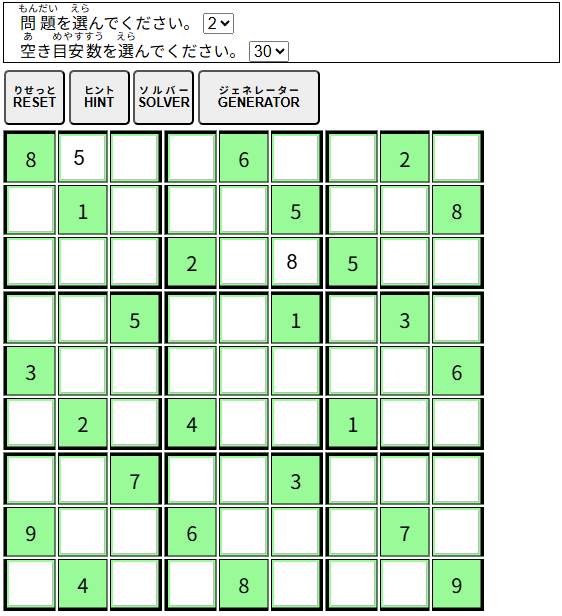

| 【ナンバープレイス】 |
|
9×9のマス目を、タテ9マス・ヨコ9マス・各3×3のマス目が1から9までの数字をそれぞれひとつずつ含むように埋めるゲームです。
 ＜ルール＞ ・タテの列は1から9の数字をそれぞれひとつずつしか含むことができない。 ・ヨコの列は1から9の数字をそれぞれひとつずつしか含むことができない。 ・各3×3のマス目は1から9の数字をそれぞれひとつずつしか含むことができない。 ・既存の問題を解きたい場合には、問題を選んでください。 ・新しい問題を解きたい場合には、空き目安数を選んで、[GENERATOR]ボタンをクリックしてください。 ・[RESET]ボタンをクリック（タッチ）すると最初からやり直す事ができます。 ・[HINT]ボタンをクリック（タッチ）すると少しずつ解答を表示します。 ・[SOLVER]ボタンをクリック（タッチ）すると解答を表示します。 ・[GENERATOR]ボタンをクリック（タッチ）すると、空き目安数から問題を作成します。 |